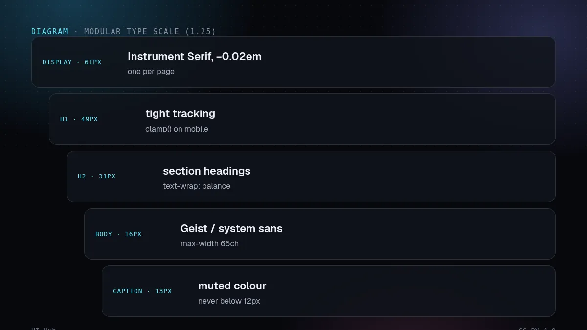
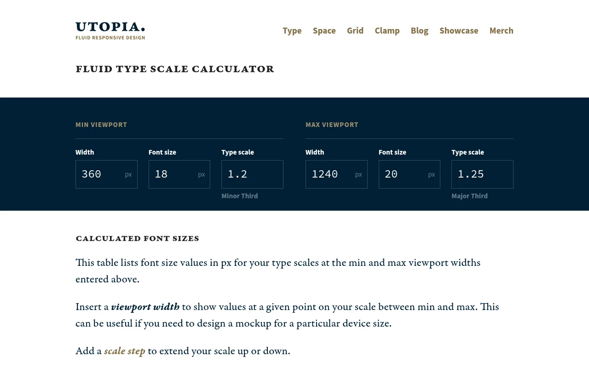
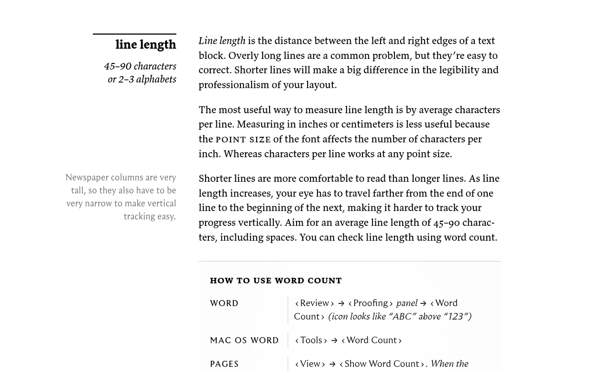

让任何生成器做一个落地页，你通常会得到一种无衬线字体，分成正文、标题和说明三个字号。字体排印是把页面拉离默认样式最便宜的杠杆，而且在提示里很容易说精确。

从说明文字到展示标题的字号阶梯 · 示意图：UI Hub 原创，CC BY 4.0
写进需求的五条规则
- 用模数字号阶梯。选一个比例（紧凑应用 1.2，营销页 1.25–1.333），每一级起个 Token 名。
- 两种字体，各司其职。标题用展示字体（Instrument Serif 这类衬线，或紧凑的怪诞体），界面用耐用的无衬线。
- 大字收紧字距。展示字号用负字距（约 −0.02em），正文保持默认。
- 限制行长。拉丁文正文大约每行 45–75 个字符，用
max-width: 65ch。
- 流式字号。标题用
clamp()，别让手机继承桌面字号。

Utopia 流式字号计算器 · 截图：Utopia（utopia.fyi），2026-10-14 截取，版权归原站所有
中日韩文字要单独设置
中文和日文的行高要稍大（约 1.7），不要用负字距；标题用 word-break: keep-all 或 text-wrap: balance，避免短语被拆到下一行孤零零一个字。我们自己的日语标题就是这样修好的。

Practical Typography 关于行长的章节 · 截图：Practical Typography（practicaltypography.com），2026-10-14 截取，版权归原站所有我们的看法
如果 AI 产出只改一处，就改字号阶梯和展示字体。两行 Token 的改动，效果立竿见影。